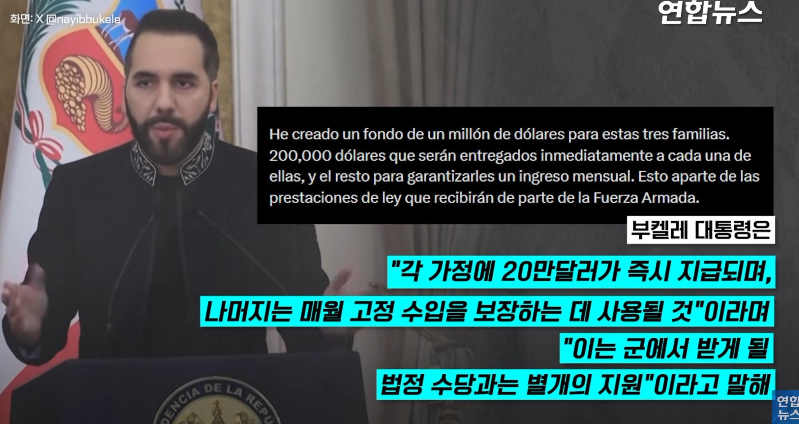
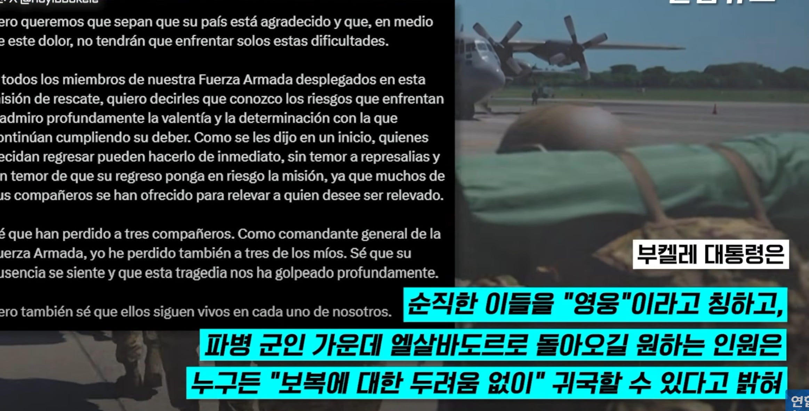

이야 ㄷㄷ


이야 ㄷㄷ
알아왔습니다
고생했다. 콜라시켜서 보쌈에 싸먹고 자라.
콜보싸자 ㄷㄷㄷㄷ
단순계산으로 최저기준 200정도니까
약 4배 16억쯤되겟다
ChatGPT: 알아봤습니다.
점마 진짜 빠꾸없더라 치안도 정상화 시키고
독재는 맞는데
너무 잘하고있어서 참ㅋㅋ
철인정치 ㄷㄷ
독재라는 말도 있는데
그냥 결과로 증명하네....
독재든 공산주의든 잘 살 수 있으면 됨
대부분의 독재는 좆되긴함. ㅋㅋ.
독재라는 말이 있는게 아니고 결과가 좋아도 독재는 독재임...
오 가서 죽고 4억 받은 다음 부두술로 되살아면 4억 이득 개꿀
에도텐세!
원래 후진국에서 무질서를 바로잡고 개도국 수준으로 올라올 때 독재의 힘이 잘 작동하긴 함
문제는 그 이상을 절대 못 올라간다는 거임. 독재자는 권력을 놓으면 죽는다는 걸 알고 있기 때문에 자연히 종신독재의 길로 가고, 측근들의 충성을 얻기 위해 이권을 나눠주며 국가의 미래를 제 호주머니에 넣어버림
그렇게 된 나라의 미래는 우리 모두가 알고 있음. 김일성의 북한, 푸틴의 러시아, 에르도안의 터키 등등...
북한은 개도국도 못간거같은데
한국은 적절한 타이밍에 측근의 충성이 아니라 총성을 얻은 결과..
사실 우리나라는 독재자가 마음놓고 빨아먹을 자원이 없는 나라라서 어쩔 수 없음.
사람이 자원인 나란데 그래서 사람을 키워서 자라나게 되면 독재자가 편히 있을 수 없게 되겟지.
오히려 지도자가 진짜 초인이라면 독재가 가장 효율적인 정치체계고 민주주의는 무식한 애들이 현명한 지도자 발목잡는 체계지.
근데 지금까지의 사례들이 초인이란 존재하지 않으며 모든 성군은 타락한다는걸 보여줬죠?
워싱턴은 다르다!!
엘살바도르 진짜 걷고있으면 주변에서 살인사건 하나씩 일어나는 인세의 지옥이라는 동네였는데 독재든 지랄이든 뭐라도 해서 사람 살수 있는데로 만들면 좋은거지 뭐...
아프리카보다 인구당 살인사건 수가 높으면 말 다했던거지.
이아저씨 비트코인 계속 매수하고있나
카르텔? 이새끼들 어케됨 다뒤졌나 유엔에 헬프친것 까지만 아는데 ㅋㅋ
미국 특수부대출신 용병기업이랑 아이티군, 엘살바도르군이랑 연합해서 절멸
보통 독재자들 장기집권+늙음 = 보통 좆되긴 함 ㅋ
그전에 존나게 나라 키워놔야지
카르텔 조진것만으로 존나게 업적임 어차피 가난한 나라는 부패하니까
권력에 의한 피해보다 카르텔 피해가 국민들한테 더 크고
서로 뒤질라고 경쟁하겠구만. 전투중에 오발사고라도 서로 내려나.
부켈레는 저걸로 용병사업하려는것 같음 2년전부터 아이티에 엘살바도르 군인 파병하고싶다고 인터뷰도했던데
군인들 존나 용맹해질듯ㅋㅋㅋ
정말로 주는걸까
쟤가 걔잖아
국가 예산 비트코인에 꼬라박아서 5배였나 10배 먹었던 인간
4억 줄만함;;;
독재나 민주정이나 그 자체로는 선악이 아님. 장단이 있는 통치 체제일뿐
챗지피티야 대한민국으로 환산하면 얼마 받는지 알아와줘